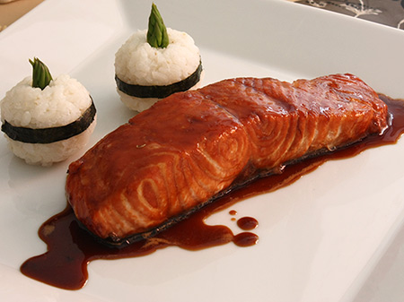

Torrejas con canela
Preparación:
Corta en rodajas el pan. Bate los huevos, agrega la esencia de vainilla, el azúcar y sumerge en ellas las rodajas de pan. Calienta una sartén con teflón con aceite y cuando estén doradas dales vuelta Agrega la raja de canela, el agua y sirve.Escribe un comentario:

Juan: Son mis preferidos y el desayuno perfecto y facil de preparar.

Diana: Gracias por la receta a mi esposo le encantan!!!!.
Salmón en Salsa Teriyaki

Preparación:
Sazona los filetes de salmón con sal. En una sartén, agrega una cucharada de aceite de oliva y cuando esté caliente dora los filetes por ambos lados, no es necesario dejarlos mucho tiempo ya que el salmón es de cocción rápida, puedes dejarlos máximo 5 minutos por cada lado.Para la Salsa Teriyaki
En una olla, agrega media taza de salsa soya, 3 cucharadas de azúcar morena, dos dientes de ajo machacados y dos láminas de jengibre, cocina hasta que el azúcar se disuelva. Agrega media taza de agua y una cucharadita de fécula de maíz o maicena para espesar la salsa. Revuelve muy bien y apaga cuando la salsa espese. Retira las láminas de jengibre y los restos del ajo, si consideras necesario puedes colar la salsa. Sirve el salmón, báñalo con la salsa teriyaki y por encima agrega el ajonjolí o las semillas de sésamo.Escribe un comentario:
Ivanna: Esta receta es una de mis preferidas solo que no sabia como se preparaba.. Gracias por la receta la voy a preparar.